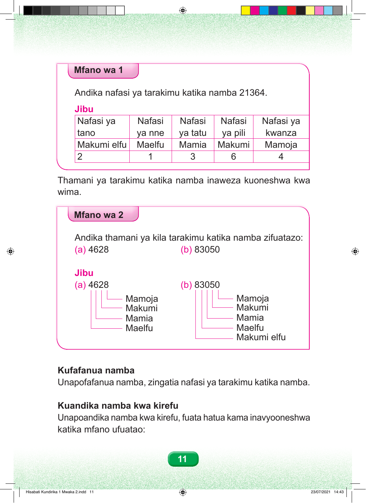

Mfano wa Kwanza Andika nafasi ya tarakimu katika namba 21364. Jibu Jedwali lina nafasi tano. Namba ni elfu ishirini na moja, mia tatu sitini na nne. Kutoka kulia kwenda kushoto: nafasi ya kwanza ni mamoja, ina tarakimu 4. Nafasi ya pili ni makumi, ina tarakimu 6. Nafasi ya tatu ni mamia, ina tarakimu 3. Nafasi ya nne ni maelfu, ina tarakimu 1. Nafasi ya tano ni makumi elfu, ina tarakimu 2. Thamani ya tarakimu katika namba inaweza kuoneshwa kwa wima. Mfano wa Pili Andika thamani ya kila tarakimu katika namba zifuatazo: (a) 4628 (b) 83050 Jibu Jibu. Sehemu a. Namba ni elfu nne mia sita ishirini na nane. Kutoka kulia kwenda kushoto: nane ni mamoja, mbili ni makumi, sita ni mamia, na nne ni maelfu. Sehemu b. Namba ni elfu themanini na tatu na hamsini. Kutoka kulia kwenda kushoto: sifuri ni mamoja, tano ni makumi, sifuri ni mamia, tatu ni maelfu, na nane ni makumi elfu. Kufafanua namba Unapofafanua namba, zingatia nafasi ya tarakimu katika namba. Kuandika namba kwa kirefu Unapoandika namba kwa kirefu, fuata hatua kama inavyooneshwa katika mfano ufuatao: 11 Hisabati Kundirika 1 Mwaka 2.indd 11 23/07/2021 14:43